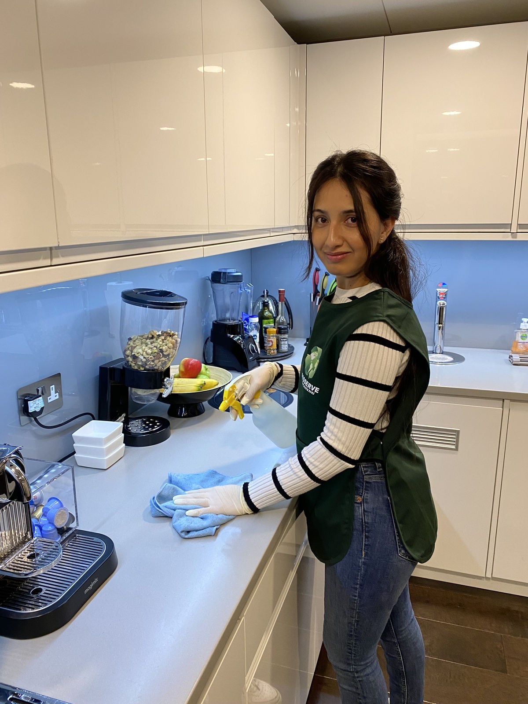

هل تحتاج معاينة قبل حجز شركة تنظيف بالرياض؟
قبل ما تأكد أي حجز تنظيف، يمكن مر في بالك سؤال: هل لازم أحد من الشركة يجي يشوف البيت أول؟ ولا أقدر أحجز على طول؟ وموضوع معاينة قبل حجز تنظيف بالرياض فعلًا يحيّر ناس كثير، لأن ما فيه قاعدة واحدة تنطبق على كل البيوت.
في هذا الدليل بنجاوبك بوضوح على سؤال هل تحتاج معاينة منزلية للتنظيف بالرياض، ونوضح لك متى تكون المعاينة ضرورية ومتى تكون مجرد وقت ضايع، وكيف تختصر الطريق بدون ما تأثر على دقة السعر أو جودة الخدمة.
وبنشرح لك كذلك وش يعني تقييم المساحة قبل خدمة التنظيف بالرياض بالضبط، ووش البدائل العملية اللي تغنيك عن الزيارة المسبقة في أغلب الحالات.
ليش كثير من الناس يترددون في موضوع المعاينة؟
بعض الناس يحسون إن المعاينة تأخير لا داعي له، يبون الفريق يجي وينظف ويخلص. وبعضهم بالعكس، يخافون يحجزون بدون ما أحد يشوف البيت، فيتفاجؤون يوم الزيارة بسعر مختلف أو بفريق ما يكفي حجم الشغل.
والحقيقة إن الطرفين معهم حق في حالات معينة؛ فهم متى يكون معاينة قبل حجز تنظيف بالرياض مفيد ومتى يكون زيادة، هو اللي يوفر عليك الوقت والمفاجآت في نفس الوقت.
الحالات اللي تكون فيها المعاينة مفيدة فعلًا
فيه مواقف معينة تكون فيها الزيارة المسبقة استثمار ذكي مو تأخير. ولو كان وضعك من هالمواقف، فجواب هل تحتاج معاينة منزلية للتنظيف بالرياض غالبًا بيكون "نعم" بدون تردد.
المساحات الكبيرة جدًا
الفلل الكبيرة متعددة الأدوار، أو القصور، أو البيوت اللي فيها ملاحق وأحواش واسعة، صعب تقدّر حجم الشغل فيها من وصف أو صور. وهنا يصير تقييم المساحة قبل خدمة التنظيف بالرياض على أرض الواقع ضروري عشان تتحدد عدد العاملين والمعدات والمدة بشكل دقيق.
حالة اتساخ غير واضحة عبر الوصف
البيت اللي كان مهجور فترة طويلة، أو اللي خرج منه مستأجر وتركه بحالة سيئة، أو اللي فيه بقايا تشطيب ودهان وأسمنت، غالبًا ما تنقل الصور حقيقته. وفي هالحالات معاينة قبل حجز تنظيف بالرياض يحميك من سوء تقدير ممكن يأثر على السعر أو النتيجة.
الطلبات الخاصة
لو عندك خامات حساسة زي رخام مستورد أو خشب طبيعي أو ثريات كبيرة، أو تحتاج خدمات إضافية زي غسيل واجهات أو تنظيف خزانات، فالمعاينة تساعد الفريق يجهز المواد والمعدات المناسبة من أول زيارة.
- فلل وقصور بمساحات كبيرة وأدوار متعددة
- بيوت مهجورة أو مسلّمة من مستأجر بحالة سيئة
- تنظيف ما بعد التشطيب والترميم
- خامات حساسة أو طلبات تحتاج معدات خاصة
في كل هالحالات، سؤال هل تحتاج معاينة منزلية للتنظيف بالرياض له جواب واضح: المعاينة توفر عليك أكثر مما تاخذ منك.
محتاج تنظيف احترافي؟
ارسل لنا صور المكان على واتساب، ونقول لك مباشرة هل تحتاج معاينة ولا نقدر نأكد الحجز على طول
الحالات اللي ما تحتاج فيها معاينة
في المقابل، أغلب طلبات التنظيف اليومية ما تحتاج أي زيارة مسبقة. الشقة العادية أو البيت بمساحة معروفة، مع خدمة قياسية واضحة، يقدر يتحدد سعرها وفريقها من أول مكالمة. وهنا تقييم المساحة قبل خدمة التنظيف بالرياض يتم عن بُعد بكل سهولة.
مثلًا: شقة ثلاث غرف تحتاج تنظيف عميق عادي، أو بيت دورين تحتاج زيارة دورية معتادة. هالطلبات واضحة ومكررة، والشركات المحترفة تعرف بالضبط وش تحتاج، فطلب معاينة قبل حجز تنظيف بالرياض فيها غالبًا يأخر الموعد بدون فايدة حقيقية.
- شقة أو بيت بمساحة وعدد غرف معروف
- خدمة قياسية محددة مسبقًا (تنظيف عميق، زيارة دورية)
- حالة البيت طبيعية بدون اتساخ استثنائي
- ما فيه طلبات خاصة أو خامات حساسة
لو انطبقت عليك هالنقاط، فجواب هل تحتاج معاينة منزلية للتنظيف بالرياض غالبًا "لا"، وتقدر تأكد الحجز مباشرة بوصف واضح.

بدائل المعاينة الشخصية
الخبر الحلو إن التقنية اليوم وفرت بدائل عملية تغنيك عن الزيارة المسبقة في أغلب الحالات، وتخلي تقييم المساحة قبل خدمة التنظيف بالرياض يتم بدقة عالية وأنت في مكانك.
الوصف الدقيق عبر الهاتف
مكالمة قصيرة تذكر فيها المساحة التقريبية، وعدد الغرف ودورات المياه، ونوع الأرضيات، وحالة البيت العامة، تكفي في كثير من الأحيان. وكل ما كان وصفك أدق، كل ما قلت حاجتك لـمعاينة قبل حجز تنظيف بالرياض.
الصور عبر واتساب
الصور هي البديل الأقوى للمعاينة؛ صورة لكل غرفة، ولقطات قريبة للأماكن اللي فيها بقع أو اتساخ واضح، تعطي الشركة صورة شبه كاملة. وكثير من الناس اكتشفوا إن جواب هل تحتاج معاينة منزلية للتنظيف بالرياض صار "لا" بمجرد ما أرسلوا صور واضحة.
مكالمة الفيديو
بعض الشركات تقبل مكالمة فيديو قصيرة تتجول فيها بالكاميرا في البيت، وهذي تقريبًا تساوي المعاينة الشخصية بدون ما يحتاج أحد يجيك. وهي حل ممتاز للبيوت المتوسطة والكبيرة اللي يصعب تقييم المساحة قبل خدمة التنظيف بالرياض فيها من الصور بس.
كيف تعطي وصف دقيق يغني عن المعاينة؟
سر الاستغناء عن معاينة قبل حجز تنظيف بالرياض هو الوصف المنظم؛ بدل ما تقول "البيت كبير ويحتاج تنظيف"، اعط أرقام وتفاصيل محددة تساعد الشركة تقدر الشغل بدقة.
- المساحة التقريبية بالمتر أو عدد الأدوار
- عدد الغرف والمجالس ودورات المياه والمطابخ
- نوع الأرضيات (سيراميك، رخام، باركيه، موكيت)
- آخر مرة انظف فيها البيت تنظيف عميق
- هل البيت مسكون أو فاضي
- أي أماكن تحتاج اهتمام خاص أو خدمات إضافية
لما تعطي هالتفاصيل كاملة من أول رسالة، تختصر على نفسك سؤال هل تحتاج معاينة منزلية للتنظيف بالرياض من الأساس، لأن الشركة بتقدر تحكم مباشرة إذا كانت الزيارة المسبقة لازمة ولا لا.
وش تصوّر بالضبط؟
- صورة عامة لكل غرفة من زاوية الباب
- المطبخ بالكامل مع الفرن والشفاط
- دورات المياه من الداخل
- أي بقع أو اتساخ استثنائي بلقطة قريبة
- النوافذ والواجهات لو كانت ضمن الطلب
هالصور البسيطة تخلي تقييم المساحة قبل خدمة التنظيف بالرياض عن بُعد أقرب ما يكون للمعاينة الحقيقية، وفي دقايق بدل ساعات.
الفرق بين "المعاينة" و"تحديد سعر تقريبي أول تواصل"
كثير من الناس يخلطون بين الاثنين. تحديد السعر التقريبي يتم في أول مكالمة أو رسالة بناءً على وصفك، ويعطيك نطاق سعر مبدئي. أما معاينة قبل حجز تنظيف بالرياض فهو زيارة فعلية يشوف فيها مختص البيت بعينه ويعطيك سعر نهائي مبني على الواقع.
| المقارنة | سعر تقريبي أول تواصل | المعاينة الشخصية |
|---|---|---|
| السرعة | دقايق | تحتاج موعد وزيارة |
| الدقة | تعتمد على دقة وصفك | عالية جدًا |
| مناسب لـ | البيوت العادية والخدمات القياسية | المساحات الكبيرة والحالات الاستثنائية |
| يأخر الحجز؟ | لا | غالبًا يوم أو يومين |
فهم هالفرق يسهل عليك جواب هل تحتاج معاينة منزلية للتنظيف بالرياض؛ لو السعر التقريبي كان واضح ومنطقي ومبني على وصف دقيق، فغالبًا ما تحتاج أكثر من كذا.
ولو حسيت إن السعر التقريبي فيه غموض أو فرق كبير بين الحد الأدنى والأعلى، فهنا يستاهل تطلب تقييم المساحة قبل خدمة التنظيف بالرياض بشكل أدق، سواء بصور إضافية أو بزيارة فعلية.
كيف تحدد هل تحتاج معاينة لحالتك أنت بالذات؟
أسهل طريقة إنك تتواصل مباشرة مع شركة تنظيف بالرياض موثوقة، وترسل لهم وصف مختصر وكم صورة، وتخليهم يقولون لك بصراحة إذا كانت الزيارة المسبقة لازمة ولا لا.
الشركة الجادة ما تطلب معاينة إلا لما تكون فعلًا مفيدة، وما ترفضها لو طلبتها أنت لأسباب مقنعة. فالقرار في موضوع معاينة قبل حجز تنظيف بالرياض يكون مشترك بينك وبينهم على أساس معلومات واضحة.
وتذكّر إن سؤال هل تحتاج معاينة منزلية للتنظيف بالرياض ما يحتاج تحسمه لحالك؛ خبرة الفريق تختصر عليك التفكير وتعطيك الجواب المناسب لحالتك خلال دقايق.
والأهم إن تقييم المساحة قبل خدمة التنظيف بالرياض سواء تم بزيارة أو بصور، يكون هدفه واحد: إن السعر والفريق والمدة يكونون مناسبين لبيتك بالضبط.
أخطاء شائعة في موضوع المعاينة
فيه أخطاء متكررة يقع فيها الناس لما يتعاملون مع معاينة قبل حجز تنظيف بالرياض، ومعرفتها مسبقًا توفر عليك مشاكل كثيرة:
الخطأ الثاني بالذات يسبب مشاكل؛ لأن الفريق يجي مجهز لحجم شغل معين ويتفاجأ بواقع مختلف، فإما يتأخر الشغل أو يتغير السعر. ولهذا الصراحة في وصف الحالة جزء أساسي من جواب هل تحتاج معاينة منزلية للتنظيف بالرياض.
هل المعاينة تكون مجانية؟
في أغلب الشركات المحترمة، المعاينة داخل المدينة تكون مجانية أو بتكلفة رمزية تنخصم من قيمة الخدمة لو حجزت. لكن الأفضل تسأل عن هالنقطة مسبقًا، خصوصًا لو كان تقييم المساحة قبل خدمة التنظيف بالرياض يتطلب زيارة لموقع بعيد أو مشروع كبير.
ولو كانت الشركة تطلب مبلغ كبير على المعاينة بدون ما تخصمه، فهذا يستاهل تفكر فيه وتقارن مع شركات ثانية قبل ما توافق.
كم تاخذ المعاينة من وقت؟
المعاينة نفسها عادةً ما تاخذ أكثر من نص ساعة لساعة حسب حجم البيت، لكن الوقت الحقيقي هو الانتظار لين يتوفر موعد. وهذا اللي يخلي معاينة قبل حجز تنظيف بالرياض يأخر الحجز يوم أو يومين في بعض الأحيان.
لو كان عندك موعد ضيق، مثل مناسبة قريبة أو تسليم بيت، فالأفضل تعتمد على الصور والفيديو بدل المعاينة، إلا لو كانت الحالة فعلًا استثنائية.
وش يصير لو اختلف الواقع عن الوصف يوم الزيارة؟
هذا السؤال مهم جدًا، وجوابه يعتمد على الشركة. الشركات المحترفة توضح لك من البداية إن السعر مبني على الوصف، ولو كان فيه فرق كبير في الواقع، يتم إبلاغك قبل البدء وتقرر أنت. وهذا جزء من شفافية أي حوار حول هل تحتاج معاينة منزلية للتنظيف بالرياض.
ولهذا السبب بالذات، تقييم المساحة قبل خدمة التنظيف بالرياض الدقيق من البداية، سواء بزيارة أو بصور واضحة، يحميك ويحمي الشركة من أي خلاف يوم التنفيذ.
المعاينة في الفلل مقابل الشقق
الشقق غالبًا مساحاتها معروفة ومتقاربة، فالسعر يتحدد بسهولة من عدد الغرف. أما الفلل فتختلف كثير في التصميم والملاحق والأحواش، ولهذا معاينة قبل حجز تنظيف بالرياض في الفلل الكبيرة يكون أكثر شيوعًا وأكثر فايدة.
ومع ذلك، الفيلا المتوسطة بحالة طبيعية ممكن تكفيها صور واضحة ومكالمة فيديو قصيرة، فجواب هل تحتاج معاينة منزلية للتنظيف بالرياض في الفلل ما يكون "نعم" دائمًا.
المعاينة للمكاتب والمحلات التجارية
المكاتب والمحلات التجارية لها طبيعة مختلفة؛ ساعات العمل، وطبيعة الأجهزة، والأماكن الحساسة، كلها تحتاج تنسيق مسبق. ولهذا تقييم المساحة قبل خدمة التنظيف بالرياض في المواقع التجارية غالبًا يتم بزيارة فعلية، خصوصًا لو كان الطلب عقد دوري طويل.
المعاينة هنا ما تحدد السعر بس، بل تحدد أفضل أوقات العمل بدون ما تعطل الموظفين أو العملاء.
المعاينة قبل تنظيف ما بعد التشطيب
تنظيف ما بعد التشطيب من أكثر الحالات اللي تستاهل زيارة مسبقة، لأن كمية بقايا الأسمنت والدهان والغبار تختلف كثير من مشروع لمشروع. وفي هالحالة معاينة قبل حجز تنظيف بالرياض يحدد إذا كان الشغل يحتاج معدات خاصة أو مواد معينة لإزالة البقايا بدون ما تخرب الأسطح الجديدة.
ولو كان المشروع كبير، فالمعاينة تحدد كذلك إذا كان التنظيف يحتاج أكثر من يوم وأكثر من فريق، وهذا اللي يجاوب بدقة على سؤال هل تحتاج معاينة منزلية للتنظيف بالرياض في مشاريع التشطيب.
أسئلة تسألها وقت المعاينة
لو قررت إنك تحتاج زيارة مسبقة، استغلها صح. جهز أسئلتك قبل ما يوصل المختص، عشان يكون تقييم المساحة قبل خدمة التنظيف بالرياض كامل وواضح من كل الجوانب:
- كم عدد العاملين اللي بيجون وكم المدة المتوقعة؟
- وش المهام المشمولة بالضبط في السعر؟
- هل المواد والمعدات على الشركة؟
- وش الخدمات الإضافية وكم سعرها؟
- هل فيه ضمان أو إعادة تنظيف لو فيه ملاحظات؟
وش يصير في زيارة المعاينة خطوة بخطوة؟
لو قررت تطلب زيارة مسبقة، من الأفضل تعرف وش بيصير بالضبط عشان تستفيد منها لأقصى درجة. غالبًا يوصل مختص أو مشرف من الشركة في الموعد المتفق عليه، ويبدأ بجولة سريعة على البيت كامل قبل ما يدخل في التفاصيل.
بعدها يمر على كل غرفة، ويلاحظ نوع الأرضيات، وحالة الجدران والنوافذ، والأماكن اللي فيها اتساخ متراكم أو بقع صعبة. ويسألك عن أولوياتك: وش أكثر شي يضايقك في البيت؟ ووش الأماكن اللي تبيها تاخذ اهتمام أكبر؟
وفي آخر الزيارة يعطيك تصور واضح: عدد العاملين، والمدة المتوقعة، والمواد والمعدات اللي بيجيبونها، والسعر النهائي أو نطاق سعر دقيق. وتقدر وقتها تسأل عن أي شي مو واضح قبل ما تأكد.
كيف تجهز البيت لزيارة المعاينة؟
عكس ما يتوقع البعض، لا تنظف البيت قبل المعاينة! الهدف إن المختص يشوف الحالة الحقيقية اللي بيتعامل معها الفريق، فلو رتبت ونظفت قبلها بتعطي انطباع غير دقيق، وممكن ينعكس هذا على التقدير.
اللي تحتاج تسويه بس إنك تفتح كل الغرف والأماكن اللي تبيها ضمن الشغل، وتجهز قائمة بطلباتك الخاصة، وتحدد الأماكن اللي ما تبي أحد يدخلها. بهالطريقة تكون الزيارة سريعة ومفيدة.
- افتح كل الغرف والملاحق المطلوب تنظيفها
- جهز قائمة بطلباتك الخاصة والأماكن المهمة
- حدد الأماكن الخاصة اللي ما تدخل ضمن الشغل
- لا تنظف قبل الزيارة عشان التقدير يكون واقعي
البيوت المسكونة مقابل البيوت الفاضية
فيه فرق كبير بين تنظيف بيت مسكون وبيت فاضي. البيت الفاضي أسهل في الوصول لكل الزوايا، لكن غالبًا يكون فيه غبار متراكم من فترة طويلة. أما البيت المسكون ففيه أثاث وأغراض تحتاج تعامل حذر، والتنظيف فيه يكون حول الأشياء مو بعد إزالتها.
ولهذا من المهم تذكر في وصفك إذا كان البيت مسكون أو فاضي، لأن هالمعلومة لحالها تغير عدد العاملين والمدة وطريقة الشغل بالكامل. وكثير من سوء التقدير يصير بسبب إغفال هالتفصيلة البسيطة.
كيف تقدّر الشركات عدد العاملين المطلوب؟
الشركات المحترفة عندها خبرة تراكمية تخليها تقدر عدد العاملين بسرعة بناءً على المساحة ونوع الخدمة وحالة البيت. مثلًا، شقة متوسطة بتنظيف عميق تحتاج عدد معين، وفيلا بنفس الحالة تحتاج ضعفه أو أكثر.
لكن فيه عوامل تغير الحسبة: وجود مطبخ كبير جدًا، أو عدد دورات مياه أكثر من المعتاد، أو نوافذ كثيرة وعالية، أو سجاد وكنب يحتاج غسيل. وكل ما ذكرت هالتفاصيل مبكرًا، كل ما كان التقدير أدق والفريق مناسب للشغل من أول مرة.
كيف يتحدد وقت التنفيذ؟
مدة التنفيذ ترتبط مباشرة بعدد العاملين وحجم الشغل. فريق كبير ممكن يخلص فيلا في يوم واحد، وفريق صغير ممكن يحتاج يومين لنفس الفيلا. والشركة الجيدة توازن بين الاثنين حسب رغبتك: تبي الشغل يخلص بسرعة، ولا يهمك أكثر إن التكلفة تكون أقل؟
ولو كان عندك موعد نهائي، مثل استلام بيت أو مناسبة، اذكره من البداية، عشان الشركة ترتب الفريق بالحجم اللي يضمن إن الشغل يخلص قبل الموعد بوقت كافي.
العوامل اللي ترفع أو تخفض السعر
فهمك للعوامل المؤثرة في السعر يساعدك تعطي وصف أدق، ويخليك تفهم ليش سعرك ممكن يختلف عن سعر جارك حتى لو كان البيتين بنفس الحجم تقريبًا.
- المساحة الإجمالية وعدد الأدوار والملاحق
- حالة الاتساخ ومدة آخر تنظيف عميق
- نوع الأرضيات والخامات الحساسة
- الخدمات الإضافية زي غسيل الكنب والسجاد والواجهات
- الموعد المطلوب ومدى استعجاله
البيت اللي انظف تنظيف عميق من شهر مثلًا، غير البيت اللي ما انظف من سنة، حتى لو كانوا بنفس المساحة بالضبط. ولهذا الصراحة في ذكر آخر مرة انظف فيها البيت تفرق كثير في دقة السعر.
نصائح لتصوير البيت بطريقة صحيحة
الصورة الواضحة تغني عن كلام كثير، لكن الصورة المظلمة أو المهزوزة ممكن تعطي انطباع غلط. صوّر في النهار مع إضاءة طبيعية، وافتح الستائر، وخل الصورة تشمل الغرفة كاملة من زاوية الباب.
وبعدها صوّر لقطات قريبة للأماكن المهمة: البقع على السجاد، الترسبات في الحمامات، الدهون على الشفاط، والغبار على النوافذ. واللقطات القريبة هذي هي اللي تساعد الشركة تعرف نوع المواد اللي بتحتاجها.
ولو كان البيت كبير، رتب الصور حسب الأدوار أو الغرف، أو اكتب تحت كل مجموعة صور اسم المكان. هالتنظيم البسيط يختصر وقت كثير على الطرفين.
الخامات اللي لازم تذكرها مسبقًا
بعض الخامات تحتاج مواد وطرق تنظيف خاصة، ولو ما ذكرتها ممكن الفريق يجي بمواد ما تناسبها. الرخام الطبيعي مثلًا يتأثر بالمنظفات الحمضية، والخشب الطبيعي ما يتحمل الماء الكثير، والأقمشة الفاخرة تحتاج تعامل لطيف.
اذكر أي خامة مميزة في بيتك: رخام، باركيه، ستائر حرير، ثريات كريستال، أو أسطح مطلية بطلاء خاص. هالمعلومة تحمي ممتلكاتك وتضمن إن الفريق يجي مجهز بالمنتجات المناسبة.
الأماكن اللي الناس ينسون يذكرونها
كثير من الناس يوصفون الغرف الرئيسية ويسقطون أماكن ثانية تاخذ وقت ومجهود كبير. والنتيجة إن يوم الزيارة يطلع شغل أكثر من المتوقع، ويتأثر الوقت أو السعر.
- غرفة الغسيل والمستودع
- السطح والأحواش والمداخل الخارجية
- غرفة السائق أو الملحق الخارجي
- الدرج والممرات بين الأدوار
- الخزائن العلوية والدواليب من الداخل
ذكر هالأماكن من البداية، حتى لو ما تبي تنظفها، يساعد الشركة تفهم حجم البيت الحقيقي وتقدر الشغل بدقة.
الخصوصية وتنسيق دخول الفريق
سواء كانت زيارة معاينة أو زيارة تنظيف، دخول أشخاص للبيت يحتاج تنسيق يحترم خصوصية الأسرة. حدد مسبقًا الوقت المناسب، ومين من أهل البيت بيكون موجود، والأماكن اللي مسموح الدخول لها.
ولو كنت تفضل إن المعاينة أو الفريق يكون نسائي في أوقات معينة، اذكر هذا من البداية. الشركات المنظمة تتعامل مع هالطلبات باحترام وتنسقها بدون أي تعقيد، لأنها تعرف طبيعة البيوت في الرياض.
وثّق الاتفاق كتابيًا
بعد ما يتحدد السعر، سواء بعد زيارة أو بعد وصف وصور، اطلب إن الاتفاق يوصلك مكتوب ولو برسالة واتساب واضحة. الرسالة تتضمن المهام المشمولة، وعدد العاملين، والموعد، والسعر النهائي، وأي خدمات إضافية متفق عليها.
هالخطوة البسيطة تحميك من أي سوء فهم يوم التنفيذ، وتعطيك مرجع واضح ترجع له لو صار أي خلاف. والشركة المحترفة ما تتردد أبدًا في توثيق الاتفاق، بل غالبًا تبادر فيه بنفسها.
متى يكون أفضل وقت لطلب الزيارة المسبقة؟
لو كنت محتاج زيارة مسبقة، اطلبها قبل موعد التنظيف المطلوب بوقت كافي، مثلًا أسبوع قبل المناسبة أو قبل تاريخ الاستلام. هالمسافة تعطي الشركة وقت تنسق فيه الزيارة، وبعدها تجهز الفريق والمعدات المناسبة.
وفي المواسم المزدحمة زي قبل رمضان والأعياد، المواعيد تنحجز بسرعة، فالأفضل تبدأ التنسيق بدري. أما في الأيام العادية فغالبًا تلقى موعد زيارة خلال يوم أو يومين.
الحجز لأول مرة مع شركة جديدة
التعامل الأول مع أي شركة فيه دايم شوية تردد، وهذا طبيعي. وهنا الوصف الدقيق والصور تلعب دور مزدوج: تساعد الشركة تقدر الشغل، وتساعدك أنت تقيّم مدى احترافيتها من طريقة ردها على رسالتك.
لاحظ كيف تتعامل الشركة مع أسئلتك: هل ترد بسرعة؟ هل تسأل أسئلة ذكية عن بيتك؟ هل توضح السعر بشفافية؟ هالتفاصيل الصغيرة تعطيك مؤشر قوي عن مستوى الخدمة اللي بتحصل عليها يوم الزيارة.
ولو كان عندك تردد كبير، ابدأ بخدمة صغيرة أو غرف محددة، وبعد ما تشوف النتيجة تقدر توسع الطلب براحتك.
البيوت اللي فيها أطفال أو حيوانات أليفة
وجود أطفال صغار أو حيوانات أليفة في البيت معلومة مهمة لازم تذكرها في وصفك. أولًا لأنها تأثر على حالة البيت، زي الشعر على الكنب والسجاد، والبقع على الجدران. وثانيًا لأنها تحدد نوع المواد اللي لازم تستخدم.
الشركات المحترفة تختار منتجات آمنة وخفيفة الرائحة للبيوت اللي فيها أطفال أو حيوانات، وتهتم بالتهوية بعد التنظيف. ولو ذكرت هالمعلومة من البداية، الفريق يجي مجهز بالمنتجات المناسبة بدون ما تحتاج تطلبها يوم الزيارة.
حالات الطوارئ اللي ما فيها وقت للزيارة المسبقة
فيه مواقف ما تحتمل الانتظار: تسريب مياه، أو ضيوف جايين بكرة، أو تسليم بيت خلال ساعات. في هالحالات الزيارة المسبقة رفاهية ما تقدر عليها، والحل هو الصور ومكالمة الفيديو السريعة.
أرسل صور واضحة مع رسالة تشرح الموقف والموعد المطلوب، والشركات اللي عندها خدمة سريعة ترد عليك خلال دقايق بتقدير واضح. وفي الطوارئ، الصراحة في وصف الحالة أهم من أي وقت ثاني، لأن الفريق ما عنده فرصة يستعد لمفاجآت.
متابعة ما بعد التنفيذ ومطابقة النتيجة
بعد ما يخلص الفريق، ارجع للاتفاق المكتوب ومر على كل بند فيه. تأكد إن كل المهام المتفق عليها انتهت بالمستوى المطلوب، وإن الأماكن اللي طلبت لها اهتمام خاص أخذت حقها فعلًا.
لو فيه أي ملاحظة، بلّغ المشرف قبل ما يمشي الفريق، أو تواصل مع الشركة في نفس اليوم مع صور توضح الملاحظة. والشركات الجادة ترجع تعدّل بدون جدال، لأنها تعرف إن رضاك هو اللي يخليك ترجع لها مرة ثانية.
كيف تبني علاقة طويلة مع الشركة بعد أول تجربة؟
أول تجربة ناجحة هي بداية علاقة ممكن تريحك لسنوات. بعد ما تتعامل مع الشركة مرة، يصير عندها معلومات كاملة عن بيتك: المساحة، والخامات، وأولوياتك، والأماكن الحساسة. وهذا يخلي كل حجز بعدها أسرع وأسهل بكثير.
وفي الحجوزات اللاحقة، غالبًا ما تحتاج لا زيارة ولا صور، يكفي رسالة قصيرة تحدد فيها الموعد ونوع الخدمة. وهذي من أكبر مميزات الاستقرار على شركة وحدة موثوقة بدل التنقل بين شركات كثيرة.
كيف تقارن بين عروض أكثر من شركة؟
لو طلبت تقدير من أكثر من شركة، تأكد إنك أعطيت الكل نفس الوصف ونفس الصور، عشان تكون المقارنة عادلة. وبعدها قارن مو بس السعر، بل عدد العاملين، والمدة، والمهام المشمولة، ومين يوفر المواد، وسياسة التعامل مع الملاحظات.
وانتبه للعرض اللي سعره أقل بشكل مبالغ فيه مقارنة بالباقين؛ غالبًا يعني إن فيه مهام ما هي مشمولة، أو إن الفريق أقل من اللازم. السعر العادل هو اللي يتوافق مع حجم الشغل الحقيقي، مو الأرخص بأي ثمن.
دور خدمة العملاء في تحديد الحاجة للزيارة
فريق خدمة العملاء في الشركات المحترفة مدرب يسأل الأسئلة الصحيحة من أول مكالمة: كم غرفة؟ وش نوع الأرضيات؟ متى آخر تنظيف؟ هل فيه طلبات خاصة؟ ومن خلال إجاباتك يقدر يحدد بسرعة إذا كان طلبك واضح أو يحتاج زيارة.
ولو لاحظت إن خدمة العملاء ما تسأل أي تفاصيل وتعطيك سعر مباشر بدون ما تفهم وضعك، فهذي إشارة إن السعر ممكن يتغير يوم الزيارة، أو إن الفريق ما بيكون مجهز صح.
تنظيف البيت قبل البيع أو التأجير
لو كنت تجهز بيت للبيع أو للإيجار، فالتنظيف هنا مو مجرد نظافة، بل جزء من تسويق العقار. البيت النظيف اللامع يعطي انطباع أول قوي للمشتري أو المستأجر، وممكن يسرّع البيع أو التأجير بشكل ملحوظ.
في هالحالة، اذكر للشركة الهدف من التنظيف، لأن التركيز يكون على التفاصيل اللي تلفت نظر الزائر: لمعان الأرضيات، نظافة المطبخ ودورات المياه، والنوافذ الواضحة. والبيت غالبًا يكون فاضي، وهذا يسهل التقدير عن بُعد بالصور.
البيوت القديمة ومشاكلها الخاصة
البيوت القديمة لها طبيعة مختلفة؛ ممكن يكون فيها بلاط تغير لونه مع الزمن، أو ترسبات قديمة في الحمامات، أو فواصل سوداء بين البلاط ما تنشال بالتنظيف العادي. وهالمشاكل تحتاج مواد ومعدات أقوى ووقت أطول.
لو بيتك قديم، اذكر عمره التقريبي وصوّر الأماكن اللي فيها ترسبات أو تغير لون. وخلك واقعي في توقعاتك؛ بعض الأشياء ممكن تتحسن كثير بالتنظيف العميق، وبعضها يحتاج صيانة أو تجديد مو تنظيف.
دور المواسم في تقدير حجم الشغل
نفس البيت ممكن يحتاج شغل مختلف حسب الموسم. بعد موسم الغبار والعواصف الترابية، النوافذ والأسطح والمكيفات تكون محملة بطبقات غبار أكثر من المعتاد. وبعد الشتاء ممكن تكون الستائر والسجاد محتاجة غسيل أعمق.
لو كان طلبك بعد موسم غبار قوي، اذكر هذا في وصفك، لأن الشركة ممكن تحتاج تزيد عدد العاملين أو المدة. والتقدير المبني على الموسم يكون أدق من التقدير العام.
التنظيف بعد مناسبة كبيرة
بعد الأعراس والعزايم الكبيرة، البيت غالبًا يكون في حالة تختلف عن وضعه الطبيعي: بقع على السجاد والكنب، أرضيات تحتاج غسيل، مجالس تحتاج ترتيب، ومطبخ مليان. وهنا الصور تكون أفضل طريقة توصل فيها الحالة الحقيقية للشركة.
صوّر المجالس والمطبخ والأماكن اللي فيها بقع، واذكر عدد الضيوف التقريبي ونوع المناسبة. هالمعلومات تعطي الشركة فكرة واضحة عن حجم الشغل، وتقدر ترسل فريق بالحجم المناسب في أسرع وقت.
الأسطح الخارجية والأحواش
الأحواش والمداخل الخارجية جزء كبير من شغل الفلل في الرياض، وغالبًا تكون أكثر مكان متأثر بالغبار والرمل. ولو كانت ضمن طلبك، صوّرها بوضوح واذكر مساحتها التقريبية ونوع الأرضية فيها.
تنظيف الأحواش يحتاج معدات مختلفة عن الداخل، مثل أجهزة الغسيل بالضغط، وتصريف مياه مناسب. ولهذا ذكرها في الوصف يساعد الشركة تجهز المعدات الصحيحة من البداية، بدل ما تكتشف الحاجة لها يوم الزيارة.
الثقة المتبادلة أساس أي حجز ناجح
في النهاية، سواء اخترت زيارة مسبقة أو اكتفيت بالصور، أساس النجاح هو الثقة المتبادلة. أنت تثق إن الشركة بتقدر الشغل بصدق وبتلتزم بالاتفاق، والشركة تثق إن وصفك دقيق وصادق.
لما يتوفر هالشي من الطرفين، تختفي أغلب المشاكل اللي يشتكي منها الناس في خدمات التنظيف: تغير السعر، أو نقص العاملين، أو اختلاف النتيجة عن المتوقع. والوضوح من أول رسالة هو أقصر طريق لهالثقة.
المطابخ الكبيرة والأجهزة المدمجة
المطابخ الحديثة في الرياض صارت أكبر وفيها أجهزة مدمجة كثيرة: أفران في الجدار، ثلاجات كبيرة، شفاطات مخفية، وأسطح من الكوارتز أو الرخام. وكل هالتفاصيل تأثر على وقت التنظيف والمواد المطلوبة.
لو مطبخك كبير أو فيه أجهزة كثيرة، صوّره من أكثر من زاوية، وصوّر الفرن والشفاط من قريب. الدهون المتراكمة على الشفاط مثلًا ممكن تاخذ وقت أطول من تنظيف غرفة كاملة، ومعرفة حالتها مسبقًا تساعد في تقدير دقيق.
واذكر إذا كنت تبي تنظيف الأجهزة من الداخل، مثل الفرن والثلاجة، لأن هالمهام غالبًا ما تكون ضمن التنظيف الأساسي إلا لو طلبتها بشكل واضح.
دورات المياه: التفاصيل اللي تفرق في التقدير
عدد دورات المياه في البيت من أهم العوامل في التقدير، لأن كل وحدة تحتاج تعقيم دقيق وإزالة ترسبات ووقت معتبر. والبيوت الكبيرة في الرياض ممكن يكون فيها خمس أو ست دورات مياه أو أكثر.
صوّر كل دورة مياه، خصوصًا الأماكن اللي فيها ترسبات كلسية على الحنفيات والزجاج، أو اسوداد بين البلاط. هالتفاصيل تحدد نوع المواد اللي بيجيبها الفريق، وتضمن إن النتيجة تكون مرضية من أول مرة.
السجاد والكنب والمفروشات
لو كان طلبك يشمل غسيل السجاد أو الكنب أو المجالس، اذكر عدد القطع ونوع القماش بقدر ما تعرف. غسيل المفروشات خدمة تحتاج أجهزة خاصة ووقت تجفيف، وغالبًا تُسعّر بشكل منفصل عن التنظيف العام.
صوّر البقع الواضحة على المفروشات، واذكر إذا كانت بقع قديمة أو حديثة، لأن البقع القديمة تحتاج معالجة مختلفة. وهالتفاصيل تساعد الشركة تعطيك توقع واقعي للنتيجة بدل وعود ما تتحقق.
كيف تتصرف لو طلبت الشركة معاينة وأنت ما تشوفها لازمة؟
أحيانًا تطلب الشركة زيارة مسبقة وأنت تحس إن طلبك واضح. هنا اسألهم بلطف عن السبب: هل فيه شي في الصور مو واضح؟ هل تبون تشوفون مكان معين؟ وممكن تقترح مكالمة فيديو كبديل أسرع.
وفي الغالب، الشركة الجادة بتوضح لك السبب بصراحة، وممكن تقبل البديل لو كان يعطيها المعلومات اللي تحتاجها. أما لو أصرت على الزيارة بدون سبب مقنع لطلب بسيط، فهذي إشارة تستاهل تنتبه لها.
النوافذ والواجهات الزجاجية
النوافذ من أكثر الأشياء اللي تختلف في تقديرها، لأن عددها وارتفاعها وطريقة الوصول لها تفرق كثير. نافذة عادية في الدور الأرضي غير واجهة زجاجية كبيرة في الدور الثاني تحتاج سلالم آمنة أو معدات وصول.
لو كانت النوافذ ضمن طلبك، اذكر عددها التقريبي، وهل تبي تنظيفها من الداخل بس أو من الداخل والخارج، وصوّر النوافذ العالية بشكل خاص. هالتفاصيل تحدد إذا كان الفريق يحتاج معدات إضافية أو عامل متخصص في الارتفاعات.
المكيفات وفتحات التهوية
فتحات المكيفات وفلاترها تتجمع فيها كميات كبيرة من الغبار، خصوصًا في جو الرياض. ولو كنت تبي تنظيفها ضمن الزيارة، اذكر نوع المكيفات وعددها، لأن تنظيف المكيف السبليت يختلف عن فتحات التكييف المركزي.
بعض الشركات تعتبر تنظيف المكيفات خدمة منفصلة تحتاج فني متخصص، وبعضها يشمل تنظيف الفتحات الخارجية والفلاتر ضمن التنظيف العميق. سؤالك عن هالنقطة من البداية يوضح لك وش مشمول بالضبط.
ملخص عملي: رسالة واحدة تكفي في أغلب الحالات
لو تبي تختصر كل اللي فات في خطوة وحدة، جهز رسالة واتساب فيها: نوع السكن ومساحته التقريبية، وعدد الغرف ودورات المياه، ونوع الأرضيات، وآخر مرة انظف فيها البيت، والخدمات الإضافية اللي تبيها، والموعد المطلوب. وأرفق معها صور لكل غرفة ولقطات قريبة للأماكن الصعبة.
هالرسالة الوحدة، لو كانت كاملة وواضحة، تكفي في أغلب الحالات عشان توصلك تسعيرة دقيقة وموعد مؤكد خلال وقت قصير، بدون زيارات ولا انتظار.
الشقق المفروشة والبيوت المؤجرة يوميًا
أصحاب الشقق المفروشة والبيوت اللي تتأجر يومي أو أسبوعي يحتاجون تنظيف متكرر وسريع بين كل ضيف والثاني. وفي هالحالة، أول مرة ممكن تحتاج وصف مفصل أو صور كاملة، لكن بعدها تصير الزيارات روتينية ومعروفة، وتنحجز برسالة قصيرة.
والأهم في هالنوع من الأماكن هو الالتزام بالوقت، لأن الضيف الجاي ينتظر. فاختار شركة تعرف طبيعة هالشغل وتقدر تلتزم بمواعيد دقيقة، وتفهم إن الفرش والمناشف وتجهيز المكان جزء من المهمة.
العمارات والمباني السكنية الكاملة
لو كنت مالك عمارة أو مسؤول عن مبنى سكني كامل، فتنظيف المداخل والدرج والممرات والمصاعد والأسطح يحتاج تقدير مختلف تمامًا عن تنظيف شقة وحدة. وهنا الزيارة المسبقة غالبًا تكون ضرورية، لأن كل مبنى له تصميمه وعدد أدواره وطبيعة استخدامه.
والتنظيف في المباني السكنية غالبًا يكون بعقد دوري، فالزيارة الأولى تحدد مو بس السعر، بل الجدول المناسب وعدد الزيارات الشهرية وأوقات العمل اللي ما تزعج السكان.
كلمة أخيرة عن الوضوح
كل الأقسام اللي فاتت ترجع لنقطة وحدة: الوضوح. كل ما كانت معلوماتك أوضح وأدق، كل ما قلت حاجتك لأي زيارة مسبقة، وكل ما كان السعر أدق والنتيجة أقرب لتوقعاتك.
السلالم والدرج الداخلي
الدرج الداخلي في الفلل والبيوت متعددة الأدوار ياخذ وقت أكثر مما يتوقعه الناس؛ كل درجة تحتاج تنظيف، والدرابزين يحتاج مسح وتلميع، والزوايا بين الدرجات يتجمع فيها الغبار. ولو كان الدرج من الرخام أو مغطى بموكيت، فالتعامل معه يختلف تمامًا.
اذكر عدد الأدوار ونوع خامة الدرج، وصوّره من فوق ومن تحت، عشان يدخل ضمن التقدير بشكل صحيح ولا يصير مفاجأة يوم التنفيذ.
نصيحة من فريق نقاء قبل ما تقرر
من واقع تجربتنا، أغلب الطلبات تنحسم من أول رسالة فيها وصف واضح وكم صورة، والقليل بس يحتاج معاينة قبل حجز تنظيف بالرياض فعلي. فلا تخلي فكرة المعاينة تأخرك عن الحجز لو كان بيتك في حالة طبيعية.
وفي نفس الوقت، لو كان عندك شك حقيقي في حجم الشغل، لا تتردد تطلب زيارة. سؤال هل تحتاج معاينة منزلية للتنظيف بالرياض ما فيه جواب غلط، فيه بس جواب مناسب لوضعك.
ونصيحتنا الأخيرة: خل تقييم المساحة قبل خدمة التنظيف بالرياض يكون صريح وواضح من طرفك، لأن دقة المعلومات هي اللي تضمن لك سعر عادل ونتيجة ترضيك.
خلاصة سريعة قبل الانتقال للأسئلة الشائعة
المعاينة مفيدة للمساحات الكبيرة جدًا والحالات الاستثنائية والطلبات الخاصة، وغير ضرورية للبيوت العادية والخدمات القياسية. وهذا ملخص موضوع معاينة قبل حجز تنظيف بالرياض كله في سطر.
ولو ما زلت محتار في سؤال هل تحتاج معاينة منزلية للتنظيف بالرياض، ابدأ بالصور والوصف، والشركة بتقول لك إذا كان يحتاج أكثر.
وتذكّر إن تقييم المساحة قبل خدمة التنظيف بالرياض عن بُعد صار دقيق جدًا اليوم، ويوفر عليك وقت كثير في أغلب الحالات.
أسئلة شائعة حول المعاينة قبل الحجز
الخاتمة
في النهاية، موضوع معاينة قبل حجز تنظيف بالرياض يرجع لطبيعة بيتك وحالته ونوع الخدمة اللي تحتاجها، مو لقاعدة ثابتة.
جواب هل تحتاج معاينة منزلية للتنظيف بالرياض لأغلب الناس بيكون "لا"، بشرط إنك تعطي وصف دقيق وصور واضحة من البداية.
وإذا تبي مساعدة في تقييم المساحة قبل خدمة التنظيف بالرياض لبيتك بالتحديد، فريق نقاء جاهز يستقبل صورك ويعطيك جواب واضح وسريع، سواء احتجت زيارة أو لا.
✨ أرسل الصور وخلنا نقرر معك
أرسل لنا صور بيتك ووصف مختصر على واتساب، ونقول لك مباشرة إذا تحتاج زيارة أو نأكد الحجز على طول
احجز الآن مع نقاء للتنظيف
وصف واضح وكم صورة، وتوصلك تسعيرة دقيقة وموعد مؤكد بدون انتظار
- تسعيرة سريعة من الصور والوصف
- معاينة ميدانية للمساحات الكبيرة والحالات الخاصة
- فريق مجهز حسب حجم شغلك الحقيقي
- نفس معايير الجودة والاحترافية المعتادة